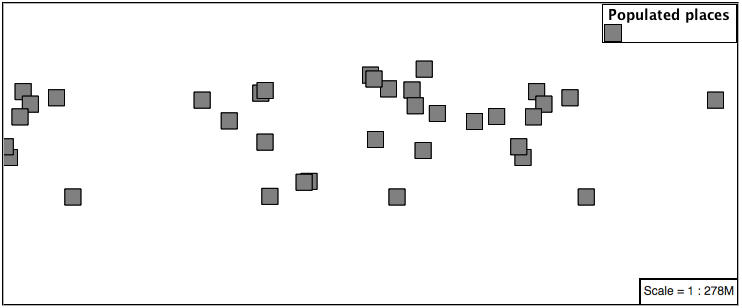
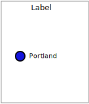
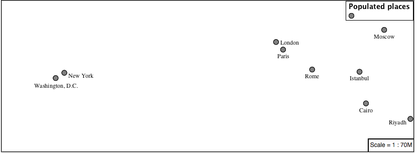
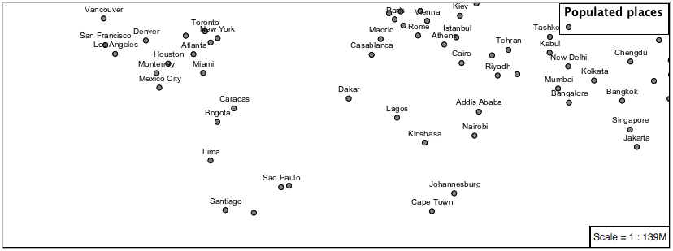
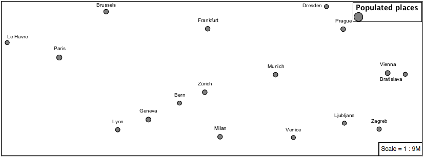
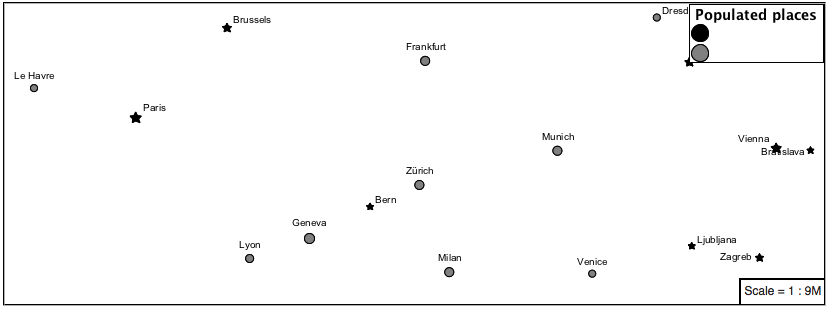

4.4. Points¶
The next stop of the ysld styling tour is the representation of points.

Review of point symbology:
Points are used to represent a location only, and do not form a shape. The visual width of lines do not change depending on scale.
SLD uses a PointSymbolizer record how the shape of a line is drawn.
Labeling of points is anchored to the point location.
As points have no inherent shape of of their own, emphasis is placed on marking locations with an appropriate symbol.
Reference:
YSLD Reference Point symbolizer (User Manual | YSLD Reference)
Point (User Manual | SLD Reference )
This exercise makes use of the ne:populated_places layer.
Navigate to the Styles page.
Click Add a new style and choose the following:
Name:
point_example
Workspace:
No workspace
Format:
YSLD
Choose point from the
Generate a default styledropdown and click generate.Replace the initial YSLD definition with the following and click apply:
symbolizers: - point: symbols: - mark: shape: circle stroke-width: 1
And use the Layer Preview tab to preview the result.

4.4.1. Mark¶
The point symbolizer controls the display of point data. Points are represented with the mandatory property mark.
The SLD standard provides “well-known” symbols for use with point symbology: circle, square, triangle, arrow, cross, star, and x.
Change the symbol used by the style to a square:
symbolizers: - point: symbols: - mark: shape: square stroke-width: 1
Map Preview:

Before we continue we will use a filter to cut down the amount of data shown to a reasonable level.
rules: - filter: ${SCALERANK < '1'} scale: [min, max] symbolizers: - point: symbols: - mark: shape: square stroke-width: 1
Note
symbolizers has been indented under rules
Resulting in a considerably cleaner image:
Additional properties are available to control a mark’s presentation:
The size property is used to control symbol size.
The rotation property controls orientation, accepting input in degrees.
Trying these two settings together:
rules: - filter: ${SCALERANK < '1'} scale: [min, max] symbolizers: - point: size: 8 rotation: 45.0 symbols: - mark: shape: square stroke-width: 1
Results in each location being marked with a diamond:

The mark property provides parameters to style the point symbol. Let’s change the fill-color to gray.
rules: - filter: ${SCALERANK < '1'} scale: [min, max] symbolizers: - point: size: 8 rotation: 45.0 symbols: - mark: shape: square stroke-color: 'black' stroke-width: 1 fill-color: 'gray'
Updating the mark to a gray square with a black outline.

You can add more symbolizers to apply additional point styles.
Using this approach marks can be composed of multiple symbols, each with its own settings:
rules: - filter: ${SCALERANK < '1'} scale: [min, max] symbolizers: - point: size: 16 symbols: - mark: shape: square stroke-color: 'black' stroke-width: 1 fill-color: 'red' - point: size: 14 rotation: 45.0 symbols: - mark: shape: cross stroke-color: 'white' stroke-width: 1 fill-color: 'black'
Producing an interesting compound symbol effect:

4.4.2. Graphic¶
Symbols can also be supplied by an external graphic,
This technique was shown with the initial airport.svg YSLD example.
To use an external graphic two pieces of information are required.
url property is defined with a url reference to image.
format property is used to tell the rendering engine what file format to expect
This technique is used to reference files placed in the styles directory.
rules: - filter: ${SCALERANK < '1'} scale: [min, max] symbolizers: - point: symbols: - external: url: file:/path/to/geoserver/data_dir/styles/port.svg format: image/svg
Drawing the provided shape in each location:

The property url reference can also be used to reference external images. We can make use of the GeoServer logo.
rules: - filter: ${SCALERANK < '1'} scale: [min, max] symbolizers: - point: size: 16 symbols: - external: url: http://localhost:8080/geoserver/web/wicket/resource/org.geoserver.web.GeoServerBasePage/img/logo.png format: image/png
As shown in the map preview.

4.4.3. Label¶
Labeling is now familiar from our experience with LineString and Polygons.
The text symbolizer with the label property are required to label Point Locations.
Replace
point_examplewith the following:rules: - filter: ${SCALERANK < '1'} scale: [min, max] symbolizers: - point: symbols: - mark: shape: circle stroke-color: 'black' stroke-width: 1 fill-color: 'gray' - text: label: ${NAME} fill-color: 'gray' placement: point
Confirm the result in
Layer Previewpreview.Each label is drawn starting from the provided point - which is unfortunate as it assures each label will overlap with the symbol used. To fix this limitation we will make use of the YSLD controls for label placement:
anchor provides two values expressing how a label is aligned with respect to the starting label position.
displacement is be used to provide an initial displacement using and x and y offset. For points this offset is recommended to adjust the label position away for the area used by the symbol.
Note
The property anchor defines an anchor position relative to the bounding box formed by the resulting label. This anchor position is snapped to the label position generated by the point location and displacement offset.
Using these two facilities together we can center our labels below the symbol, taking care that the displacement used provides an offset just outside the area required for the symbol size.
rules: - filter: ${SCALERANK < '1'} scale: [min, max] symbolizers: - point: size: 10 symbols: - mark: shape: circle stroke-color: 'black' stroke-width: 1 fill-color: 'gray' - text: label: ${NAME} fill-color: 'black' placement: point anchor: [0.5, 1.0] displacement: [0, -12]
Each label is now placed under the mark.
One remaining issue is the overlap between labels and symbols.
GeoServer provides a vendor specific parameter to allow symbols to take part in label conflict resolution, preventing labels from overlapping any symbols. This severely limits the area available for labeling and is best used in conjunction with a large maximum displacement vendor option.
x-labelObstacle vendor parameter asks the rendering engine to avoid drawing labels over top of the indicated symbol. This applies to the point symbolizer.
x-maxDisplacement vendor parameter provides the rendering engine a maximum distance it is allowed to move labels during conflict resolution. This applies to the text symbolizer.
x-spaceAround vendor parameter tells the rendering engine to provide a minimum distance between the labels on the map, ensuring they do not overlap. This applies to the text symbolizer.
Update our example to use these settings:
rules: - filter: ${SCALERANK < '1'} scale: [min, max] symbolizers: - point: size: 10 symbols: - mark: shape: circle stroke-color: 'black' stroke-width: 1 fill-color: 'gray' x-labelObstacle: true - text: label: ${NAME} fill-color: 'black' placement: point anchor: [0.5, 1.0] displacement: [0, -12] x-maxDisplacement: 100 x-spaceAround: 2
Resulting in a considerably cleaner image:

4.4.4. Dynamic Styling¶
We will quickly use scalerank to select content based on @scale filters.
define: &point size: 6 symbols: - mark: shape: circle stroke-color: 'black' stroke-width: 1 fill-color: 'gray' rules: - filter: ${SCALERANK < '7'} scale: ['4000000.0', '8000000.0'] symbolizers: - point: <<: *point - filter: ${SCALERANK < '5'} scale: ['8000000.0', '1.7E7'] symbolizers: - point: <<: *point - filter: ${SCALERANK < '4'} scale: ['1.7E7', '3.5E7'] symbolizers: - point: <<: *point - filter: ${SCALERANK < '3'} scale: ['3.5E7', '7.0E7'] symbolizers: - point: <<: *point - filter: ${SCALERANK < '2'} scale: ['7.0E7', '1.4E8'] symbolizers: - point: <<: *point - filter: ${SCALERANK < '1'} scale: ['1.4E8', max] symbolizers: - point: <<: *point - scale: [min, '4000000.0'] symbolizers: - point: <<: *point
Click Apply to update the Layer Preview after each step.

Note
This YSLD makes use of a define to avoid repeating the point symbolizer content multiple times. As an example the scale: [min, '4000000.0'] rule, combined with the define: results in the following collection of properties:
- scale: [min, '4000000.0'] symbolizers: - point: size: 6 symbols: - mark: shape: circle stroke-color: 'black' stroke-width: 1 fill-color: 'gray'
To add labeling we must use both a point and text symbolizer in each scale filter.
define: &point size: 6 symbols: - mark: shape: circle stroke-color: 'black' stroke-width: 1 fill-color: 'gray' define: &label label: ${NAME} fill-color: 'black' font-family: Arial font-size: 10 font-style: normal font-weight: normal placement: point rules: - filter: ${SCALERANK < '7'} scale: ['4000000.0', '8000000.0'] symbolizers: - point: <<: *point - text: <<: *label - filter: ${SCALERANK < '5'} scale: ['8000000.0', '1.7E7'] symbolizers: - point: <<: *point - text: <<: *label - filter: ${SCALERANK < '4'} scale: ['1.7E7', '3.5E7'] symbolizers: - point: <<: *point - text: <<: *label - filter: ${SCALERANK < '3'} scale: ['3.5E7', '7.0E7'] symbolizers: - point: <<: *point - text: <<: *label - filter: ${SCALERANK < '2'} scale: ['7.0E7', '1.4E8'] symbolizers: - point: <<: *point - text: <<: *label - filter: ${SCALERANK < '1'} scale: ['1.4E8', max] symbolizers: - point: <<: *point - text: <<: *label - scale: [min, '4000000.0'] symbolizers: - point: <<: *point - text: <<: *label

We will use displacement and anchor to position the label above each symbol.
Add the following two lines to the label define:
define: &label label: ${NAME} fill-color: 'black' font-family: Arial font-size: 10 font-style: normal font-weight: normal placement: point anchor: [0.5, 0] displacement: [0, 6]
A little bit of work with vendor specific parameters will prevent our labels from colliding with each symbol, while giving the rendering engine some flexibility in how far it is allowed to relocate a label.
Add the following vendor options to the label define:
define: &label label: ${NAME} fill-color: 'black' font-family: Arial font-size: 10 font-style: normal font-weight: normal placement: point anchor: [0.5, 0] displacement: [0, 6] x-maxDisplacement: 90 x-spaceAround: 2
Add the following vendor option to the point define:
define: &point size: 6 symbols: - mark: shape: circle stroke-color: 'black' stroke-width: 1 fill-color: 'gray' x-labelObstacle: true

Now that we have clearly labeled our cities, zoom into an area you are familiar with and we can look at changing symbology on a case-by-case basis.
We have used expressions previous to generate an appropriate label. Expressions can also be used for many other property settings.
The
ne:populated_placeslayer provides several attributes specifically to make styling easier:SCALERANK: we have already used this attribute to control the level of detail displayed
LABELRANK: hint used for conflict resolution, allowing important cities such as capitals to be labeled even when they are close to a larger neighbor.
FEATURECLA: used to indicate different types of cities. We will check for Admin-0 capital cities.
The first thing we will do is calculate the point size using a quick expression:
${10-(SCALERANK/2)}This expression should result in sizes between 5 and 9 and will need to be applied to both point size and label displacement.
Rather than the “first come first served” default to resolve labeling conflicts we can manually provide GeoServer with a label priority. The expression provided is calculated for each label, in the event of a conflict the label with the highest priority takes precedence.
The LABELRANK attribute goes from 1 through 10 and needs to be flipped around before use as a GeoServer label priority:
${10 - LABELRANK}This expression will result in values between 0 and 10 and will be used for the priority.
define: &point size: ${10-(SCALERANK/2)} symbols: - mark: shape: circle stroke-color: 'black' stroke-width: 1 fill-color: 'gray' x-labelObstacle: true define: &label label: ${NAME} fill-color: 'black' font-family: Arial font-size: 10 font-style: normal font-weight: normal placement: point anchor: [0.5, 0] displacement: [0, '${''10'' - SCALERANK / ''2''}'] priority: ${'10' - LABELRANK} x-maxDisplacement: 90 x-spaceAround: 2
Next we can use
FEATURECLAto check for capital cities.Adding a filter for capital cities at the top of the rules list:
- filter: ${SCALERANK < '2' AND FEATURECLA = 'Admin-0 capital'} scale: ['7.0E7', max] name: capitals symbolizers: - point: symbols: - mark: shape: star stroke-color: 'black' stroke-width: 1 fill-color: 'gray' - text: label: ${NAME} fill-color: 'gray' placement: point - filter: ${FEATURECLA = 'Admin-0 capital'} scale: [min, '7.0E7'] name: capitals symbolizers: - point: symbols: - mark: shape: star stroke-color: 'black' stroke-width: 1 fill-color: 'gray' - text: label: ${NAME} fill-color: 'gray' placement: point
And updating the populated places filters to ignore capital cities:
- filter: ${SCALERANK < '7' AND FEATURECLA <> 'Admin-0 capital'} scale: ['4000000.0', '8000000.0'] symbolizers: - point: <<: *point - text: <<: *label - filter: ${SCALERANK < '5' AND FEATURECLA <> 'Admin-0 capital'} scale: ['8000000.0', '1.7E7'] symbolizers: - point: <<: *point - text: <<: *label - filter: ${SCALERANK < '4' AND FEATURECLA <> 'Admin-0 capital'} scale: ['1.7E7', '3.5E7'] symbolizers: - point: <<: *point - text: <<: *label - filter: ${SCALERANK < '3' AND FEATURECLA <> 'Admin-0 capital'} scale: ['3.5E7', '7.0E7'] symbolizers: - point: <<: *point - text: <<: *label - filter: ${SCALERANK < '2' AND FEATURECLA <> 'Admin-0 capital'} scale: ['7.0E7', '1.4E8'] symbolizers: - point: <<: *point - text: <<: *label - filter: ${SCALERANK < '1' AND FEATURECLA <> 'Admin-0 capital'} scale: ['1.4E8', max] symbolizers: - point: <<: *point - text: <<: *label - scale: [min, '4000000.0'] symbolizers: - point: <<: *point - text: <<: *label
If you would like to check your work the final file is here:
point_example.ysld
4.4.5. Bonus¶
4.4.5.1. Challenge Geometry Location¶
The mark property can be used to render any geometry content.
Challenge: Try this yourself by rendering a polygon layer using a mark property.
Note
Answer discussed at the end of the workbook.
4.4.5.2. Explore Dynamic Symbolization¶
We went to a lot of work to set up filters to choose between star and circle for capital cities.
This approach is straightforward when applied in isolation:
rules: - filter: ${FEATURECLA = 'Admin-0 capital'} scale: [min, max] symbolizers: - point: symbols: - mark: shape: star stroke-color: 'black' stroke-width: 1 fill-color: 'gray' - filter: ${FEATURECLA <> 'Admin-0 capital'} scale: [min, max] symbolizers: - point: symbols: - mark: shape: circle stroke-color: 'black' stroke-width: 1 fill-color: 'gray'
When combined with checking another attribute, or checking @scale as in our example, this approach can quickly lead to many rules which can be difficult to keep straight.
Taking a closer look,
shapecan actually be expressed using a string:rules: - filter: ${FEATURECLA = 'Admin-0 capital'} scale: [min, max] symbolizers: - point: symbols: - mark: shape: 'star' stroke-color: 'black' stroke-width: 1 fill-color: 'gray'
Which is represented in SLD as:
<sld:PointSymbolizer> <sld:Graphic> <sld:Mark> <sld:WellKnownName>star</sld:WellKnownName> <sld:Fill/> <sld:Stroke/> </sld:Mark> </sld:Graphic> </sld:PointSymbolizer>
GeoServer recognizes this limitation of SLD Mark and ExternalGraphic and provides an opportunity for dynamic symbolization.
This is accomplished by embedding a small CQL expression in the string passed to symbol or url. This sub-expression is isolated with ${ } as shown:
- point: symbols: - mark: shape: ${if_then_else(equalTo(FEATURECLA,'Admin-0 capital'),'star','circle')}
Which is represented in SLD as:
<sld:PointSymbolizer> <sld:Graphic> <sld:Mark> <sld:WellKnownName>${if_then_else(equalTo(FEATURECLA,'Admin-0 capital'),'star','circle')}</sld:WellKnownName> <sld:Fill/> <sld:Stroke/> </sld:Mark> </sld:Graphic> </sld:PointSymbolizer>
Challenge: Use this approach to rewrite the Dynamic Styling example.
Note
Answer provided at the end of the workbook.
4.4.5.3. Challenge Layer Group¶
Use a Layer Group to explore how symbology works together to form a map.
ne:NE1
ne:states_provincces_shp
ne:populated_places
To help start things out here is a style for
ne:states_provinces_shp:symbolizers: - polygon: stroke-color: 'black' stroke-width: 0.25 stroke-opacity: 0.5 fill-color: 'white' fill-opacity: 0.05 - polygon: stroke-color: 'black' stroke-width: 0.25 stroke-opacity: 0.5 fill-color: ${Recode(mapcolor9,'1','#8dd3c7','2','#ffffb3','3','#bebada','4','#fb8072','5','#80b1d3','6','#fdb462','7','#b3de69','8','#fccde5','9','#d9d9d9')} fill-opacity: 0.5
This background is relatively busy and care must be taken to ensure both symbols and labels are clearly visible.
Challenge: Do your best to style populated_places over this busy background.
Here is an example with labels for inspiration:

Note
Answer provided at the end of the workbook.
4.4.5.4. Explore True Type Fonts¶
In addition to image formats GeoServer can make use other kinds of graphics, such as True Type fonts:
symbolizers: - point: symbols: - mark: shape: ttf://Webdings#0x0064 stroke-color: 'blue' stroke-width: 1
Additional fonts dropped in the
stylesdirectory are available for use.
4.4.5.5. Explore Custom Graphics¶
The GeoServer rendering engine allows Java developers to hook in additional symbol support.
This facility is used by GeoServer to offer the shapes used for pattern fills. Community extensions allow the use of simple custom shapes and even charts.
Support has been added for custom graphics using the WKT Geometry representation.
symbolizers: - point: symbols: - mark: shape: wkt://MULTILINESTRING((-0.25 -0.25, -0.125 -0.25), (0.125 -0.25, 0.25 -0.25), (-0.25 0.25, -0.125 0.25), (0.125 0.25, 0.25 0.25)) stroke-color: 'blue' stroke-width: 1